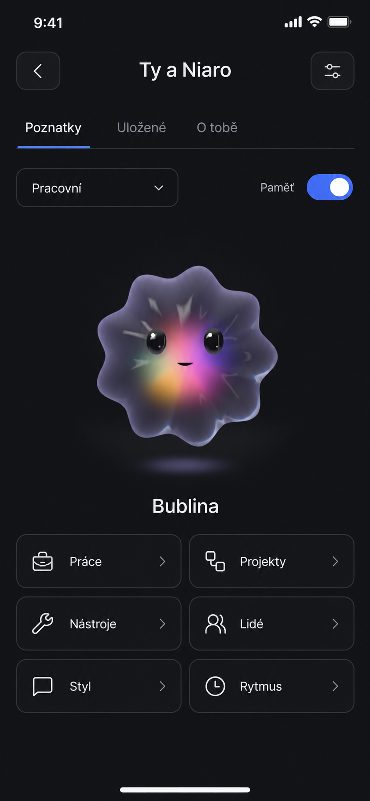
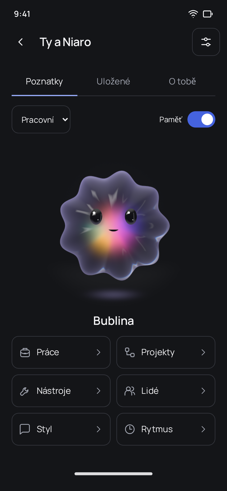
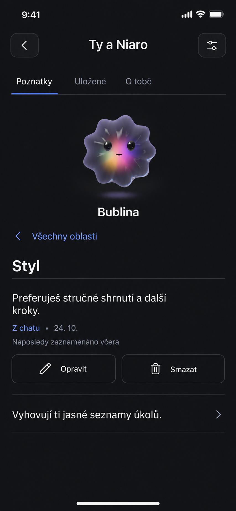
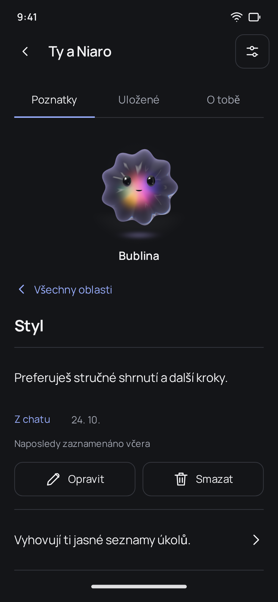
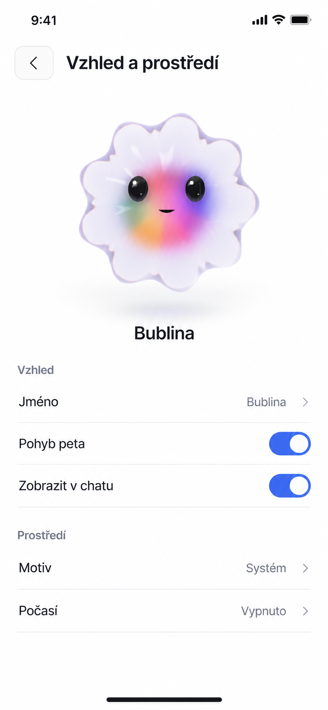
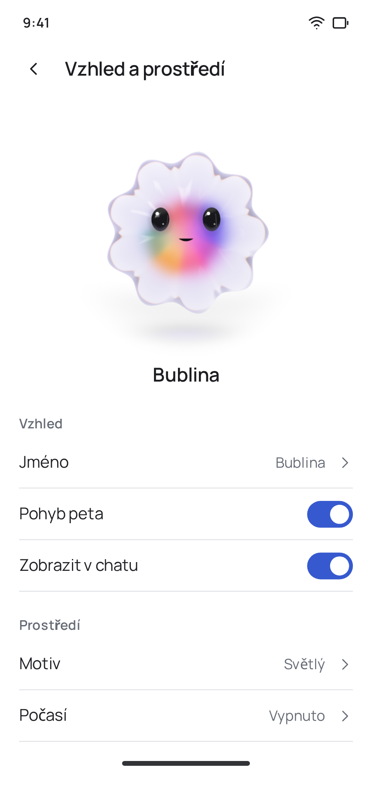

Ty a Niaro
Mobilní návrh s původním petem uprostřed a šesti oblastmi poznatků. Jde o interaktivní ukázku se smyšlenými údaji; změny zůstávají pouze v této stránce a po obnovení se ztratí.
Vyzkoušej Styl → Opravit → Uložit změny, návrat, zdroj, smazání nebo vypnutí paměti. Pet je zde statický; pohyb, vzhled a počasí jsou návrhem, nikoli dokladem hotové funkce.
Koncept a skutečné zobrazení
Přehled




Detail poznatku




Vzhled a prostředí



